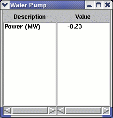

A water pump model has been added which calculates required power needed to achieve the input pressure rise based on an input isentropic efficiency of the pump. |
The User Interface first allows the user to input an Isentropic Efficiency for the Water Pump (as fraction).
When in evaluation mode the user must also specify a desired Pressure Change (outlet pressure - inlet pressure). In design mode, the user specifies the desired outlet pressure and the module accordingly calculates the required pressure change.
|  | The Summary screen displays the computed Power to coincide with specifications entered in the UI. Negative values represent the power required. |